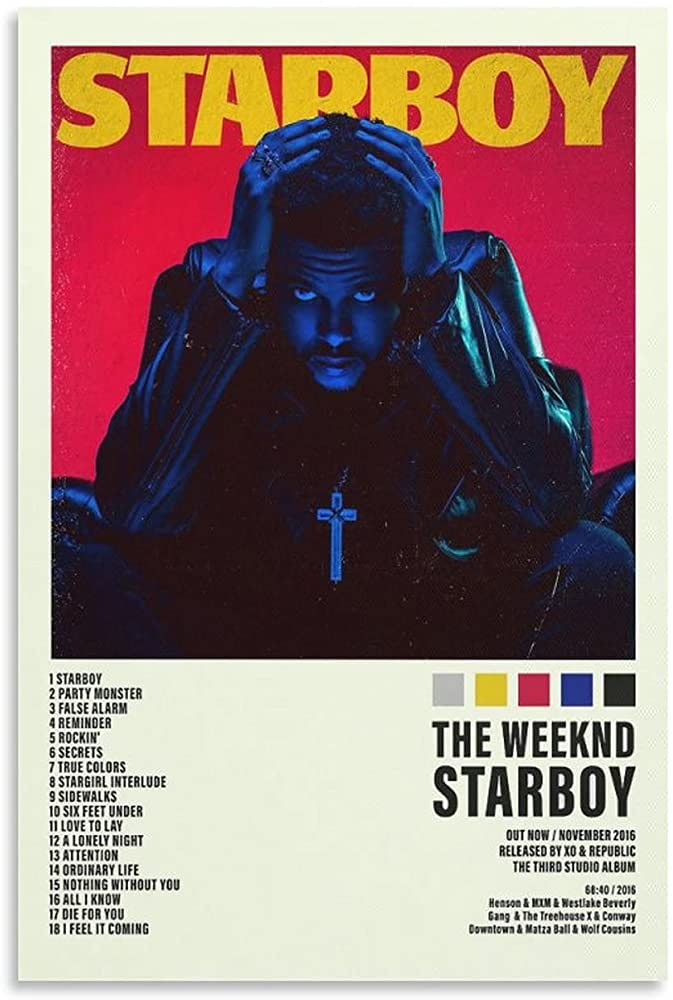

Starboy
"Starboy" is a song by Canadian singer the Weeknd from his third studio album of the same name. It features French electronic duo Daft Punk.
The Weekend
Abel Tesfaye
Dawn FM is the fifth studio album by Canadian singer-songwriter the Weeknd. It was released on January 7, 2022, through XO and Republic Records.
The number one artist on Spotify
"Starboy" is a song by Canadian singer the Weeknd from his third studio album of the same name. It features French electronic duo Daft Punk.
Abel Tesfaye

After Hours is the fourth studio album by Canadian singer the Weeknd, released on March 20, 2020, by XO and Republic Records.
Monthly listeners